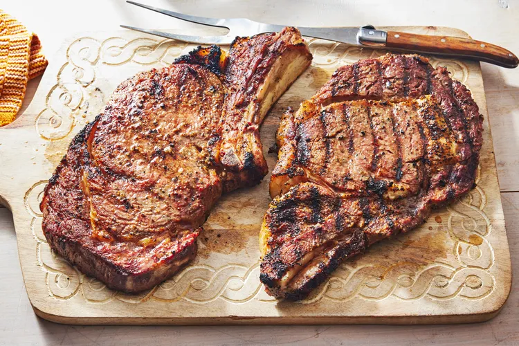

Home
Steak
Description

This 20-minute recipe is done on the stovetop in one pan (no need to finish it in the oven). This is one of our favorite steak recipes and we make it year-round because it’s such a quick and convenient cooking method. That garlic butter is lip-smacking good! Read on for great tips on how to improve , reduce food waste and you will love our ideas for easy meal prep with leftover steak.
Ingredients
2 (1½-inch) rib eye steaks, thick-cut, bone-in or butcher quality New York strip
1-2 tbsp extra light olive oil substitute with another high heat oil like tallow or vegetable oil
1 tsp fresh ground pepper
4 garlic cloves lightly smashed
2-4 fresh sprigs of thyme substitute with rosemary
Instructions
1. If refrigerated, allow the raw steaks to rest at room temperature for 20-30 minutes before cooking.
2. Preheat the oven to 400 F.
Pat the steaks dry on both sides with a paper towel. Massage in oil and generously season both sides with salt and pepper.
4. Heat a cast iron skillet with deep sides over medium heat, getting it piping hot, about 2 minutes. Add the seasoned steaks, there should be a great sizzle. Gently push the steaks down so the surface is in full contact with the pan and sear, without moving them, on high heat for about 1-2 minutes on both sides, or until a golden brown crust develops and the steaks lift away easily from the pan. *
5. Reduce the heat to low and add the butter, garlic, and thyme. Tip the pan slightly to spoon the butter over each steak. (If opting to finish on the stovetop, see the variation below in notes).
6. Place the pan in the preheated oven for approximately 5-10 minutes, although the time will depend greatly on the thickness of the steaks and the desired doneness. Use a digital meat thermometer and check the doneness chart below.
7. Note that the steaks should be removed from the oven about 5 degrees shy of the desired final temperature as they will continue to cook as they rest. Let the steaks rest for 5-10 minutes for the juices to redistribute and for the steak to finish cooking before serving. To cut the steak, slice against the grain. Spoon the pan drippings over the steaks when serving.